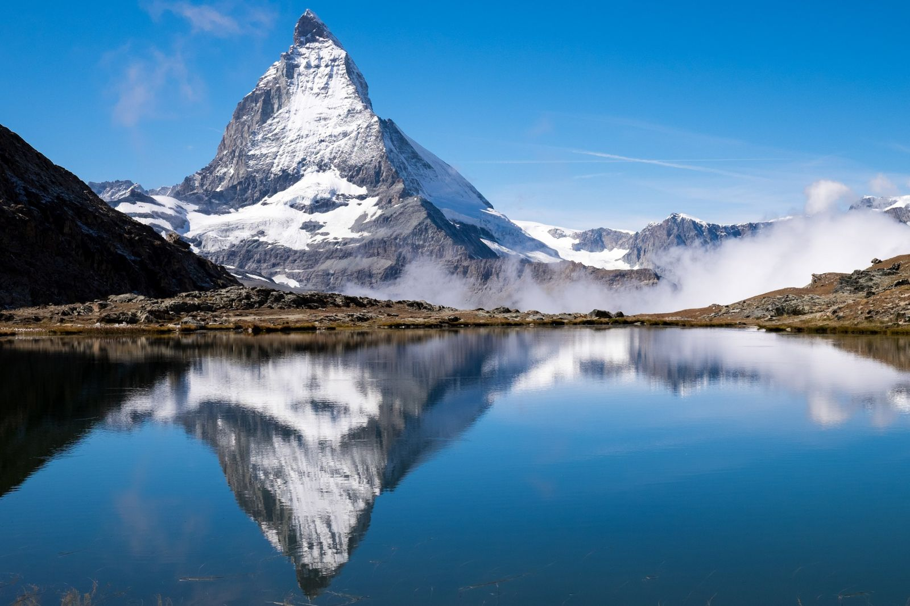
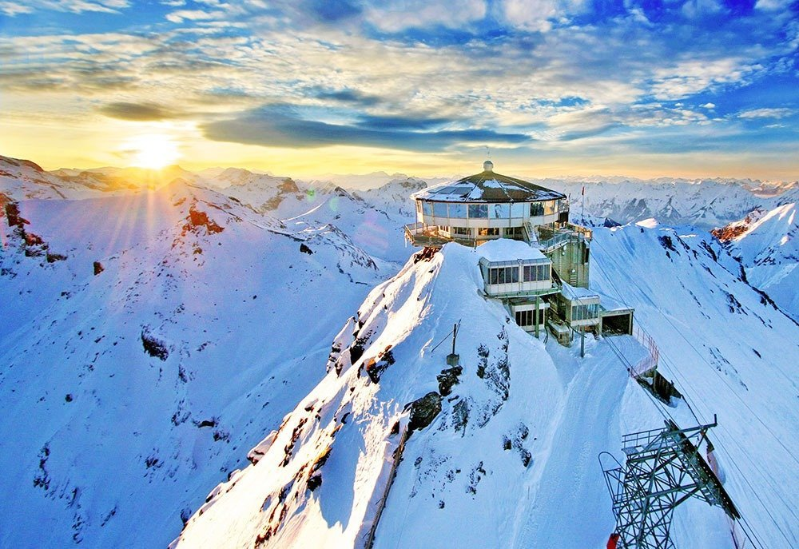
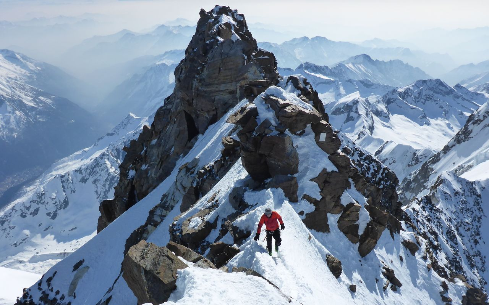
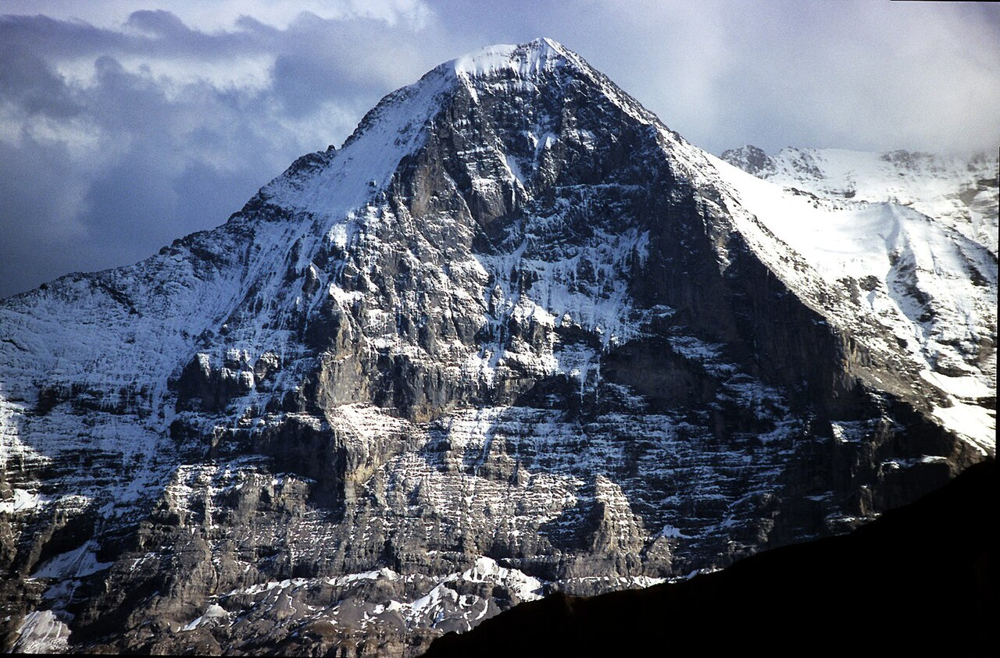
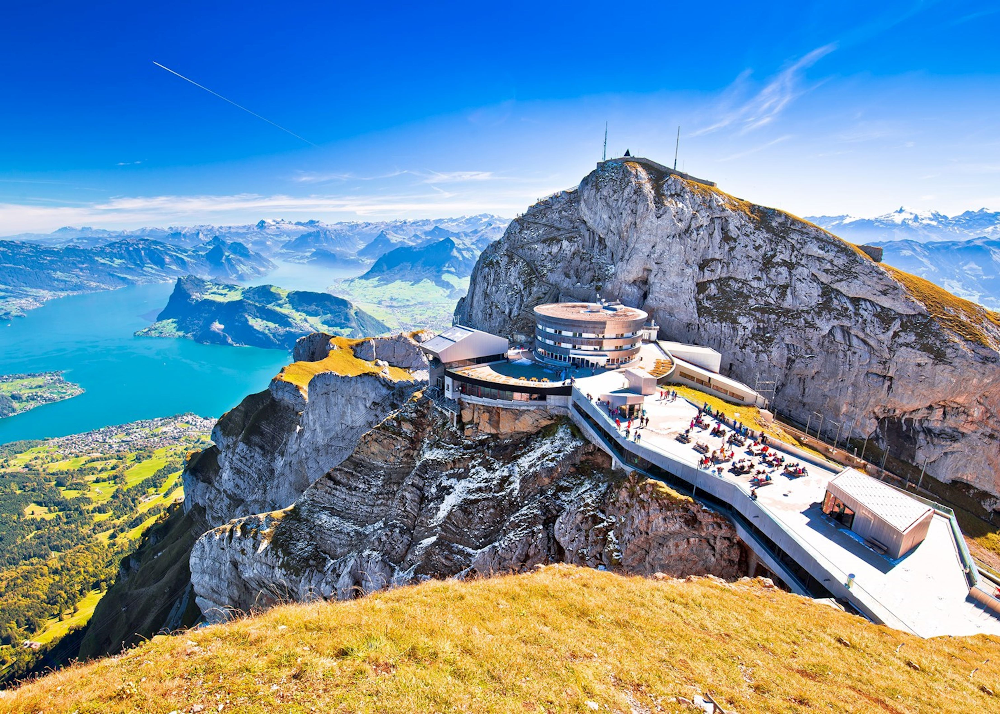
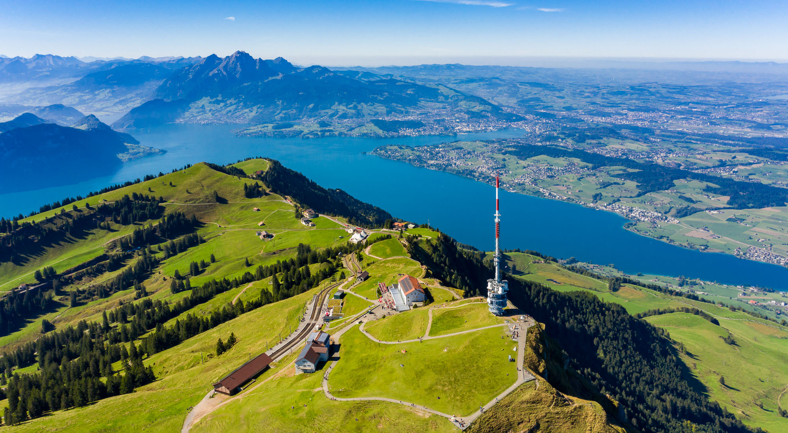

The Alps cover about 60% of Switzerland's total territory and are the defining feature of the Swiss landscape. With over 200 peaks above 3,000 metres and the iconic 4,478-metre Matterhorn as their crown jewel, the Swiss Alps are a world-class destination for outdoor enthusiasts, nature lovers, and anyone seeking breathtaking scenery.
Iconic Peaks

The Matterhorn (4,478m)
Perhaps the world's most recognisable mountain. This pyramid-shaped peak above Zermatt is a symbol of Switzerland. Non-climbers can admire it from the village or take the cable car to Trockener Steg.

Jungfrau (4,158m)
The "Top of Europe" — accessible by a famous cogwheel railway through the Eiger and Mönch. The summit at 3,454m hosts a research station and glacier walk.

Dufourspitze (4,634m)
Switzerland's highest peak, part of the Monte Rosa massif. A serious mountaineering objective, but the surrounding area in canton Valais is stunning for walking.

Eiger (3,967m)
Famous for its terrifying North Face, the Eigerwand. Grindelwald at its base is accessible to all visitors and offers dramatic views of this legendary wall.

Pilatus (2,128m)
Overlooking Lucerne, Pilatus is easily reached by the world's steepest cogwheel railway and offers spectacular panoramic views over central Switzerland.

Rigi (1,798m)
Known as the "Queen of the Mountains," Rigi is a classic day trip from Lucerne, accessible by cog railway and offering wide Alpine views.
Key Alpine Regions
| Region | Main Centres | Highlights |
|---|---|---|
| Bernese Oberland | Interlaken, Grindelwald | Jungfrau, Eiger, Schilthorn |
| Valais (Wallis) | Zermatt, Saas-Fee, Verbier | Matterhorn, Monte Rosa, Rhône Glacier |
| Graubünden (Grisons) | St. Moritz, Davos, Flims | Glacier Express, Engadin Valley |
| Central Switzerland | Engelberg, Andermatt | Titlis, Sustenpass |
| Ticino Alps | Lugano, Locarno | Mediterranean feel, Gotthard |
Getting into the Alps
- By train: Spectacular cogwheel railways take you high into the mountains — no car needed
- By cable car: Gondolas and cable cars reach altitudes impossible for trains
- On foot: Thousands of marked hiking trails crisscross the Alps in all seasons
- By car: Mountain passes like the Grimsel, Furka, and Susten offer unforgettable drives
Mountain Safety
Always check weather forecasts before heading into the mountains. Conditions can change rapidly. Carry water, sun protection, and appropriate clothing even in summer. Inform someone of your route if hiking alone.